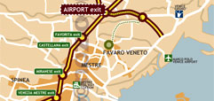

Posizione

L'Hotel Altieri si trova a Mestre in posizione ideale tra gli alberghi 3 stelle per raggiungere comodamente in auto o con i mezzi pubblici: la tangenziale di Mestre (uscita Aeroporto / Dese / Favaro) a 4 km, l'Aeroporto di Venezia Marco Polo a soli 5 km; il centro storico di Venezia a 10 km; i centri commerciali e direzionali di Mestre (l'hotel è 4 km dal centro storico); le Ville Venete della Riviera del Brenta a 15 km; le vicine città d'arte Padova e Treviso rispettivamente a 35 e a 20 km. L'Hotel Altieri è ben servito dagli autobus pubblici n. 45 per l'aeroporto e la stazione ferroviaria, n. 19 per Venezia e n. 4 (frequenza ogni 15 minuti e fermata a 50 metri dall'albergo) per Venezia. Per gli amanti del gioco, la sede di Ca' Noghera del Casinò di Venezia è 6 km dall'albergo e si raggiunge in 10 minuti di auto o con l'autobus n. 45.
Venezia (10 km)
Il parcheggio gratuito dell'Hotel Altieri consente di lasciare l'auto in albergo e di raggiungere comodamente con gli autobus che fermano ogni 15 minuti a 50 metri dall'hotel (fino a tarda sera) il centro storico di Venezia. Il tragitto da Mestre a Piazzale Roma (il terminal delle auto di Venezia) è di circa 25 minuti. Da qui iniziano gli itinerari a piedi o in vaporetto tra le pittoresche calli e i suggestivi canali che arrivano nei luoghi più belli e celebri di Venezia: il Ponte di Rialto, Piazza San Marco, il Canal Grande, le Gallerie dell'Accademia etc.
Riviera del Brenta (15 km)
E' la splendida strada che costeggia il fiume Brenta che arriva fino a Padova attraversando i deliziosi paesini Oriago, Mira e Dolo, dove dalla metà del '500 in poi i nobili veneziani costruirono sontuose "ville – fattorie" per trascorrevi la villeggiatura e dove amministrare i possedimenti della terraferma. Da vedere: La Malcontenta, meravigliosa opera di Palladio, Villa Widman Foscari a Mira perfettamente conservata, Villa Reale Pisani a Strà, affrescata da Tiepolo, con giardino splendido e famoso labirinto.
Padova (35 Km)
In 20 minuti di auto (via autostrada) dall'Hotel Altieri si arriva nel centro storico di Padova, una delle più belle ed eleganti città del Veneto. Piacevolissimo è passeggiare tra le piazze medioevali del centro: Piazza delle Erbe con il bel Palazzo della Ragione, Piazza delle Frutta dove svetta la Torre degli Anziani e Piazza dei Signori, con la Torre dell'Orologio e l'antica reggia dei Carraresi. Bellissimo il Prato della Valle, una delle piazze più grandi d'Europa. Da non perdere: la Cappella degli Scrovegni, affrescata da Giotto, e la Basilica di Sant'Antonio da Padova, capolavoro di arte e devozione.
Treviso (20 km)
Dall'albergo in 10 minuti di autostrada o in mezz'ora per il Terraglio, il lungo viale alberato dove si affacciano bellissime ville venete, si arriva a Treviso, deliziosa città d'acqua racchiusa da mura cinquecentesche attraversate da una piacevolissima passeggiata. I vicoli medioevali del centro sono attraversati dal Sile e dal Cagnan, limpidissimi fiumi di risorgiva dove si specchiano in scorci pittoreschi case e palazzi storici. Da non perdere: Casa dei Carraresi, Piazza dei Signori, le chiese medioevali San Niccolò e San Francesco e il complesso di Santa Caterina.
COME RAGGIUNGERCI
Stampa la mappa in formato PDF
Se non puoi leggere documenti PDF,
scarica Acrobat Reader.
In aereo
Dall'Aeroporto di Venezia "Marco Polo" (5 km)
Dall'aerostazione prendere l'autobus delle linee ACTV n. 45 e scendere dopo circa 7/8 minuti in Piazza Pastrello (località Favaro Veneto). L'hotel è a 200 metri, in Via Altinia 51.
Dall'Aeroporto di Treviso "San Giuseppe" (28 km)
Prendere il bus navetta Eurobus per Mestre e scendere alla Stazione Ferroviaria. Proseguire con l'autobus delle linee ACTV n. 15 (direzione Favaro) e scendere dopo circa 25 minuti in Piazza Pastrello (località Favaro Veneto). L'hotel è a 200 metri, in Via Altinia 51.
In treno
Arrivare alla Stazione Ferroviaria di Mestre e proseguire con l'autobus delle linee ACTV n. 45, n. 9 oppure con il tram (direzione Favaro) e scendere dopo circa 15 minuti in Piazza Pastrello (località Favaro Veneto). L'hotel è a 200 metri, in Via Altinia 51
In auto
Dalle autostrade, passata la barriera, proseguire sulla tangenziale di Mestre e prendere l'uscita per l'Aeroporto. Seguire le indicazioni per Dese / Favaro Veneto e imboccare la Via Altinia. Proseguire per circa 4 Km fino al n. 51 dove si trova l'Hotel Altieri.
Hotel Altieri Via Altinia 51, 30030 Favaro Veneto, Venezia Tel. +39.041.5010651 Fax +39.041.631504 info@altierivenice.it